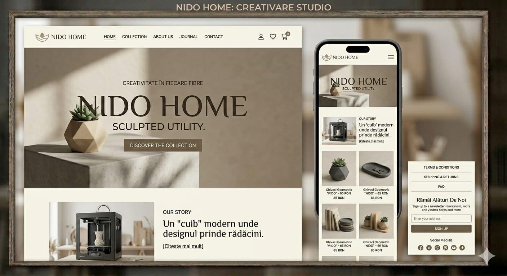
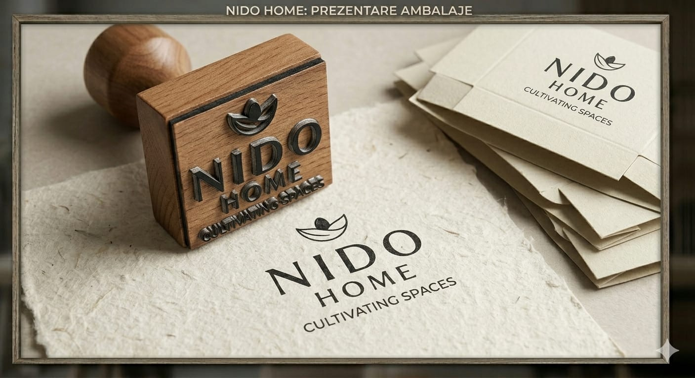
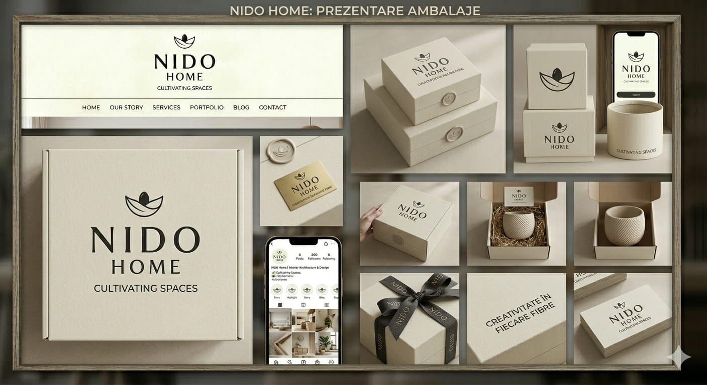
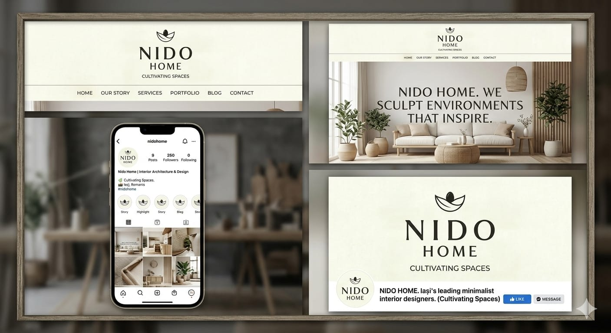

Desdepre Noi
Povestea
Noastră
Cultivăm Spații din 2024
Desdepre Noi
Cultivăm Spații din 2024

Misiunea Noastră
Nido Home s-a născut din dorința de a aduce autenticitate în spațiile contemporane. Credem că fiecare obiect dintr-o casă spune o poveste — de aceea creăm produse din materiale sustenabile, lucrate cu grijă de meșteri locali.
Fiecare piesă din colecția noastră trece prin mâinile artizanilor care transformă argila, lemnul și fibrele naturale în obiecte cu suflet. Respectăm tradițiile românești de ceramică și țesut, adaptându-le pentru gustul modern.
Sustenabilitatea nu este un trend pentru noi — este un principiu. Folosim materiale naturale, reciclabile, și colaborăm doar cu producători care împărtășesc aceeași viziune asupra responsabilității față de mediu.
Filosofia Noastră
Valorile Noastre
Materiale naturale, reciclabile și procese care respectă mediul. Fiecare decizie pe care o luăm ține cont de amprenta pe care o lăsăm.
Colaborăm cu meșteri și artizani din România care păstrează vii tradițiile ceramicii și ale prelucrării materialelor naturale.
Creăm obiecte care nu se demodează. Linii curate, forme organice și o estetică ce traversează tendințele sezoniere.
Parcursul Nostru
2024
Am început într-un mic atelier din București, cu vise mari și o pasiune pentru frumosul autentic. Primele piese de ceramică au fost modelate manual, cu răbdare și dedicație.
2025
Am lansat prima colecție completă: vaze sculpturale, căni ceramice și ghivece geometrice. Fiecare produs creat în serie limitată, cu atenție la fiecare detaliu.
2026
Am extins echipa, am mărit atelierul și pregătim noi colecții — textile naturale, obiecte din lemn și colaborări cu designeri români. Viitorul este luminos.
Galerie



Atelierul
Atelierul nostru este un spațiu luminos, plin de texturi și materiale naturale. Aici fiecare piesă este modelată, uscată, arsă și finisată manual.
Tocul rotativei, mirosul lutului umed și lumina care pătrunde prin ferestrele mari sunt ingredientele unei zile obișnuite de lucru. Nu folosim mașini — doar mâini, răbdare și pasiune.
Fiecare obiect poartă amprenta creatorului său. Este ceea ce face produsele Nido Home cu adevărat speciale — nu există două piese identice.

Explorează
Fiecare piesă a fost creată cu grijă și intenție. Află mai multe despre colecțiile noastre și găsește obiectul care completează spațiul tău.
Descoperă Colecția